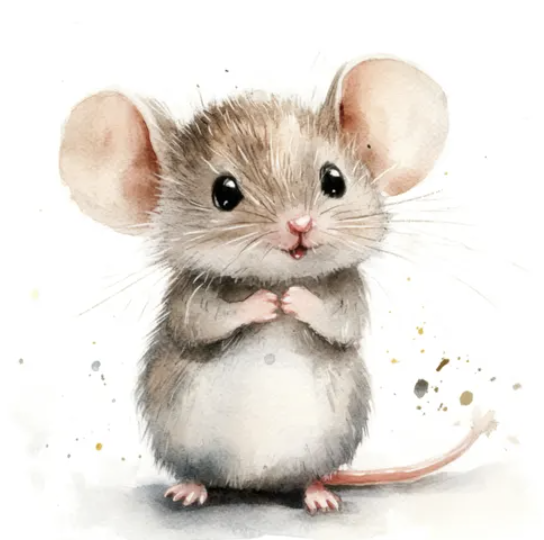
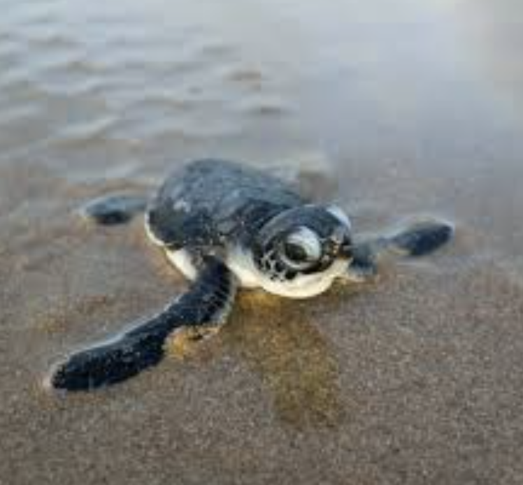
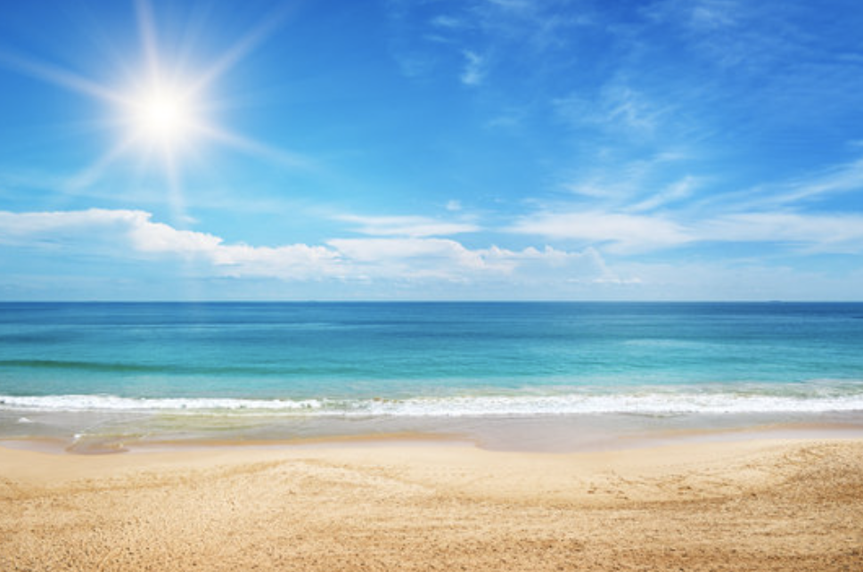
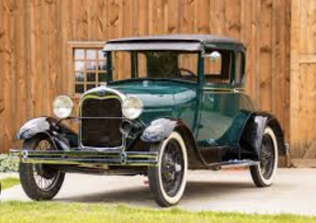
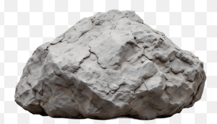

| Adjectives | Positive degree | Comparative degree |
|---|---|---|
| One-syllable | old | older |
| One-syllable ending in -e | wide | wider |
| One-syllable with a short vowel | big | bigger (double final consonant + er) |
| Two-syllable ending in -y | easy | easier (change -y to -ier) |
| Multi-syllable | difficult | more difficult |
| Exceptions | good bad far little many/much |
better worse farther / further less more |
Look at the two pictures in each box. Fill in the blank using the comparative form of the adjective in brackets!

A cute, tiny mouse.
A slow turtle crawling.
A sunny, bright beach day.
A very old, classic car.
A heavy rock.| Usage | Examples |
|---|---|
| The comparative degree is used when comparing two things / people / actions / events. | The town is bigger than it was twenty years ago. Modern cafés are more colourful than traditional coffee shops. The new museum is different from the older buildings in the town. The weather is worse today than it was yesterday. |
The comparative degree is often used with the conjunction than. Example: Moscow is bigger than Saint Petersburg.
The conjunction than is NOT used in the following cases:
| Structure | Usage | Examples |
|---|---|---|
| as + adjective + as | To emphasize the similarity of two things/people | Your hands are as cold as ice! |
| not as / so + adjective + as | To emphasize the differences between two things/people | In the 1960s, buildings were not so tall as they are today. There aren't as many shops in this town as there are in the city. |
| Adjectives | Positive degree | Superlative degree |
|---|---|---|
| One-syllable | old | oldest |
| One-syllable ending in -e | wide | widest |
| One-syllable with a short vowel | big | biggest (double final consonant + est) |
| Two-syllable ending in -y | easy | easiest (change -y to -iest) |
| Multi-syllable | difficult | most difficult |
| Exceptions | good bad far little much / many |
best worst farthest / furthest least most |
| Usage | Examples |
|---|---|
| The superlative degree is used when comparing three or more things / people / actions / events. | It's the longest river in the country. That's the most beautiful lake in the area. The best way to get there is by train. |
Adjectives in the superlative degree are usually used with the definite article the:
Those are the highest buildings I've ever seen!
The comparative degree of adjectives indicates that a certain quality is manifested in one object/person to a greater or lesser extent than in another.
The superlative degree indicates that a certain quality is manifested in one object to the greatest or least extent.
To emphasize the uniqueness of an object / person / event among others, after the superlative degree the following expressions are used:
| art gallery bank building bus / metro / petrol / police / railway / train station |
car park castle city / town centre cottage countryside |
flat guesthouse museum office block population |
post office shopping centre square variety village |
| cover cross (the bridge / street / road) discover divide |
doubt excuse hear hurry notice |
offer park pass (the bank / supermarket / etc) |
recognise recommend refuse rent |
| Phrasal Verbs | find out | knock down (eg a wall, a building) | knock down (eg a person in the street) |
|---|---|---|---|
| Phrases | bad / good weather block of flats go straight ahead / on go / walk past |
in a hurry on the right / left(-hand side) one-way street turn right / left |
|
| Adjectives | central foggy huge icy |
quiet narrow tiny wide windy |
Adverbs | anywhere nowhere |
|---|
| Noun | Verb | Adjective | Adverb |
|---|---|---|---|
| building builder |
build | ||
| crossing | cross | ||
| doubt | doubt | doubtful | doubtfully |
| flash | flash | flashing | |
| fog | foggy | ||
| ice | icy | ||
| rain | rain | rainy | |
| quiet | quietly | ||
| width | widen | wide | widely |
| wind | windy |